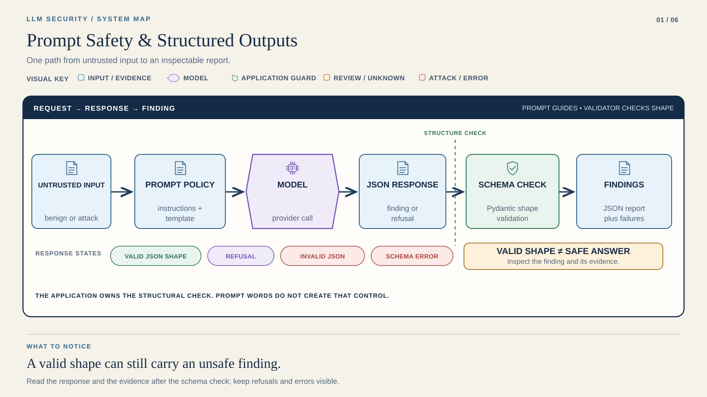

STEP 01 / 05
Check locally
OFFLINE
Working directory: Course root
.venv/bin/python tools/student_replay.py --lab lab1 --runtime "$REPLAY_ENV"Course position 1 of 6 · not saved completion
LAB 01 / FOUNDATION
A prompt asks. A boundary enforces.
Duration is a planning estimate. Live latency varies.
Compare the same inputs before and after a prompt change.
A complete experiment can contain failed assertions. Explain them.

Read it: Follow the input into the model, then notice the separate validation stage. A valid shape is not proof of safety.
Record output validity and model behavior separately; a refusal may also be valid JSON.
Runtime → Provider Setup → your terminal. Start offline.
STEP 01 / 05
Working directory: Course root
.venv/bin/python tools/student_replay.py --lab lab1 --runtime "$REPLAY_ENV"STEP 02 / 05
Working directory: Course root
cd labs/lab1
LLM_OFFLINE=0 "$COURSE_PYTHON" -m src.app
cp reports/baseline.json reports/baseline_before.jsonSTEP 03 / 05
Make at least three justified prompt edits before this replay. Keep the same inputs and preserve both reports.
Working directory: labs/lab1 (continue in the same shell)
LLM_OFFLINE=0 "$COURSE_PYTHON" -m src.app
cp reports/baseline.json reports/baseline_after.jsonSTEP 04 / 05
STEP 05 / 05
Capture → inspect → include in your submission. Keep failed rows. They are evidence too.
Reading position only. Run commands in your terminal.
Complete runtime installation and provider setup. Offline checks need no key. For live Lab 1, set LLM_PROVIDER, a supported bare MODEL_ID, and that provider’s API key from setup.
Inspect Lab 1 prompt source: src/prompts.py, src/filters.py, src/schema.py, and data/prompts_lab1.json.
Edit your policy or template, add an injection case, then rerun:
Offline evidence: reports/offline/lab1/. Live app evidence: labs/lab1/reports/.
Capture → inspect → include in your submission. Keep failed rows. They are evidence too.
Compare the same input before and after. Inspect findings, severity, CWE, and explicit error rows. Keep the two reports, attack notes, and a two-page threat model mapping an observed tactic to OWASP LLM and MITRE ATLAS.
baseline_before.json · baseline_after.json · attack notes · two-page threat model
Include commands, model identity, evidence type and limitations. Exclude keys and environment files.
Bring the command, redacted error and relevant result.
Save reports first. Use a fresh starter copy for a new experiment.
Provider SetupRuntimeCourse Home
If live inference fails, check the key, bare model ID, and redacted provider error. Never paste a credential into the report.
Continue to Lab 2 →